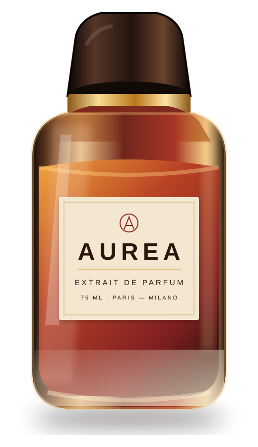

The opening
BergamottoPepe rosaMandarino
Un’apertura luminosa e leggermente pungente.

Una luce calda sulla pelle.
Ambra, vaniglia e legni scuri.
AUREA è una fragranza costruita come la luce del tramonto: calda, lenta e impossibile da trattenere.
Un’apertura luminosa e leggermente pungente.
Il centro caldo e materico della fragranza.
Una scia morbida, scura e persistente.
OBJECT STUDY / A—75
Una fragranza calda e luminosa, costruita attorno ad ambra, vaniglia, pepe rosa e legni scuri.